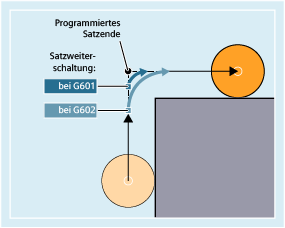
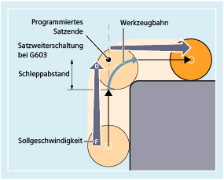
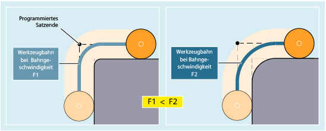

G601 / G602
G601 aktiviert das Genauhalt-Kriterium "Genauhalt fein": Der Satzwechsel erfolgt, sobald für alle an der Verfahrbewegung beteiligten Achsen die achsspezifischen Toleranzgrenzen für "Genauhalt fein" (MD36010 $MA_STOP_LIMIT_FINE[<Ax>]) erreicht sind.
G602 aktiviert das Genauhalt-Kriterium "Genauhalt grob": Der Satzwechsel erfolgt, sobald für alle an der Verfahrbewegung beteiligten Achsen die achsspezifischen Toleranzgrenzen für "Genauhalt grob" (MD36000 $MA_STOP_LIMIT_COARSE[<Ax>]) erreicht sind.
Die Bewegung wird abgebremst und am Eckpunkt kurz angehalten.
| Hinweis |
Die Grenzen für die Genauhalt-Kriterien sollten nur so eng wie nötig gesetzt sein. Je enger die Grenzen gefasst sind, desto länger dauern der Lageabgleich und das Anfahren der Zielposition. |
G603
Der Satzwechsel wird eingeleitet, wenn die Steuerung für die beteiligten Achsen die Sollgeschwindigkeit Null errechnet hat. Zu diesem Zeitpunkt liegt der Istwert um einen Nachlaufanteil zurück. Hierdurch lassen sich Werkstückecken verschleifen. Der Effekt ist abhängig von der Dynamik der Achsen und der Bahngeschwindigkeit:
Projektiertes Genauhalt-Kriterium
Für G0 und die übrigen Befehle der ersten G-Gruppe kann kanalspezifisch hinterlegt sein, dass abweichend vom programmierten Genauhalt-Kriterium automatisch ein voreingestelltes Kriterium verwendet wird (siehe Angaben des Maschinenherstellers!).